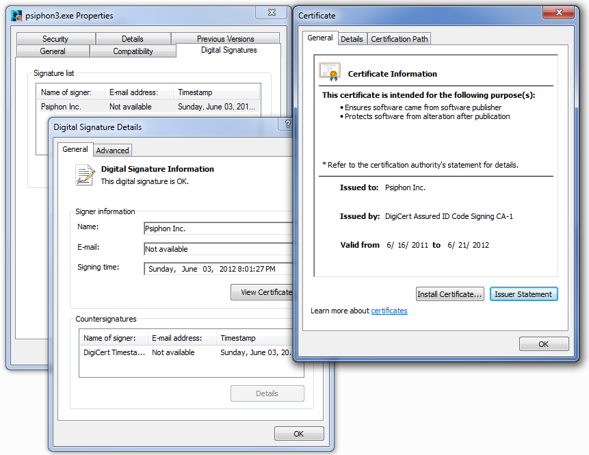
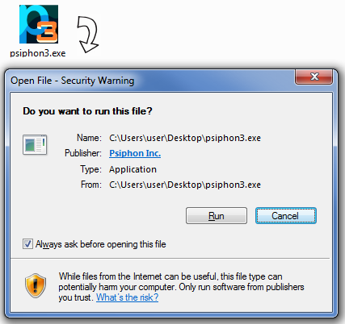
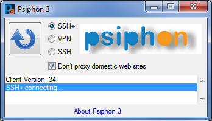
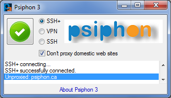
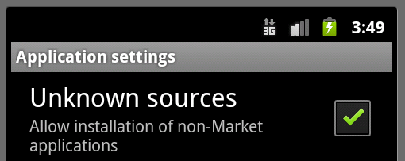
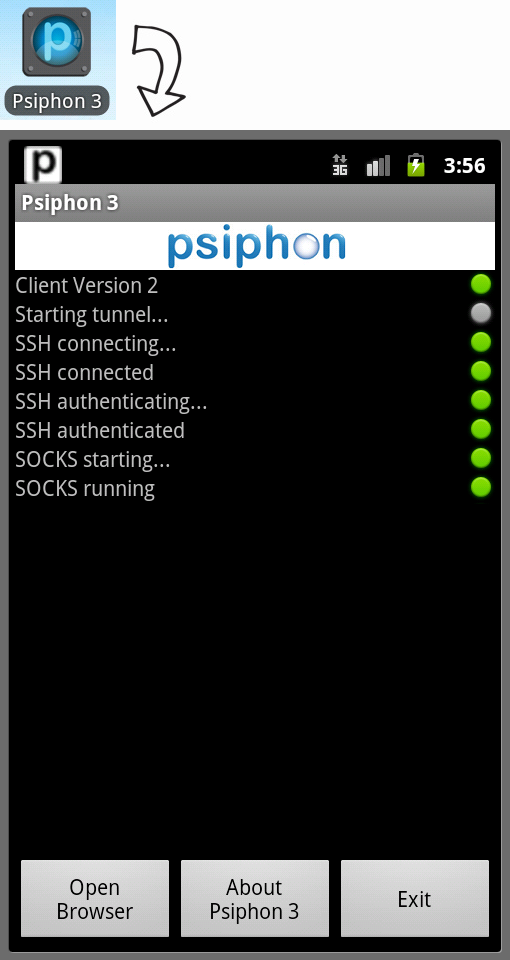
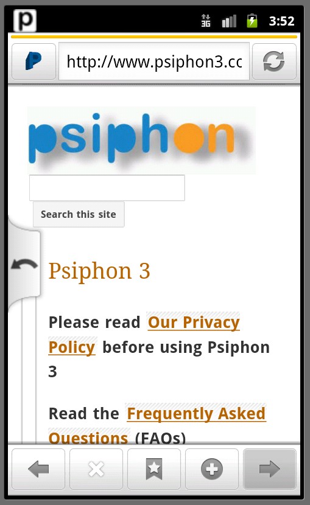

Psiphon 3 là một công cụ giải quyết của Psiphon Inc. ứng dụng công nghệ VPN, SSH và HTTP Proxy để cung cấp cho bạn khả năng truy cập nội dung Internet không bị kiểm duyệt. Bản client Psiphon 3 của bạn sẽ tự động tìm hiểu các điểm truy cập mới để tối đa hóa cơ hội vượt qua kiểm duyệt của bạn.
Psiphon 3 được thiết kế để cung cấp cho bạn khả năng truy cập mở đến nội dung trực tuyến. Psiphon không tăng cường bảo mật trực tuyến của bạn, và không nên được cân nhắc hay sử dụng như một công cụ bảo mật trực tuyến.
Nhấp vào liên kết để tải chương trình client xuống dành cho Windows XP, Vista, 7, and 8 (desktop) hoặc Android 2.2+.
Sắp có bản client Psiphon 3 dành cho iOS và Mac OS X.
Psiphon 3 dành cho Windows chưa bao giờ được phân phối như một gói cài đặt. Mỗi bản client Psiphon 3 dành cho client Windows là một tập tin thực thi (".exe") có chữ ký kỹ thuật số của Psiphon Inc. Windows sẽ tự động kiểm tra chữ ký này khi bạn chạy bản client. Bạn cũng có thể kiểm tra chữ ký theo cách thủ công trước khi chạy client bằng cách mở hộp thoại Properties cho tập tin đó và kiểm tra tab Digital Signatures.
Mã nhận dạng SHA1 dành cho Psiphon Inc. chứng nhận mã công khai được hiển thị trong tab Details của hộp thoại Certificate. Đối với chứng nhận hợp lệ trong thời gian 16 tháng 6, 2011 đến 21 tháng 6, 2012 mã nhận dạng SHA1 là:
8f:b7:ef:bd:20:a9:20:3a:38:37:08:a2:1e:0a:1d:2e:ad:7b:ee:6dvà đối với chứng nhận hợp lệ trong khoảng thời gian 21 tháng 5, 2011 đến 30 tháng 7, 2014 mã nhận dạng SHA1 là:
84:c5:13:5b:13:d1:53:96:7e:88:c9:13:86:0e:83:ee:ef:48:8e:91
Psiphon 3 dành cho Windows sẽ tự động cập nhật, và quy trình này tự động xác nhận mỗi tập tin cập nhật là chính hãng.
Tải chương trình client xuống và chạy. Khi bạn chạy chương trình, bạn sẽ thấy thông báo nhắc bảo mật cho biết rằng chương trình này là một sản phẩm hợp pháp của Psiphon Inc.
Psiphon 3 tự động bắt đầu kết nối khi bạn chạy chương trình. Trong khi nó đang kết nối, một biểu tượng xoay sẽ được hiển thị. Bạn có thể chọn một trong các chế độ kết nối sau đây: VPN (L2TP qua IPSec), SSH, hoặc SSH+ (SSH cộng với tính năng chặn, một tầng được chọn ngẫu nhiên trên SSH để tránh nhận dạng giao thức).
Kết nối với máy chủ Psiphon được lập tự động khi biểu tượng màu xanh lá được hiển thị. Ở chế độ VPN, tất cả lưu lượng của bạn sẽ tự động đi qua Psiphon 3.
Ở các chế độ SSU và SSH+, Psiphon 3 tự động đặt các thiết lập proxy của hệ thống Windows và lưu lượng cho các ứng dụng tuân thủ các thiết lập này sẽ đi qua Psiphon 3. Những thiết lập này theo mặc định được tất cả các trình duyệt web chính tuân thủ.
Ngoài ra, ở các chế độ SSH và SSH+, Psiphon 3 cung cấp một tùy chọn tách kênh trong đó lưu lượng quốc tế được đưa qua proxy và lưu lượng trong nước thì không. Đánh dấu tùy chọn "Don't proxy..." để cho phép tách kênh. Khi tùy chọn này được bật, các miền không có proxy được báo cáo trong khu vực thông báo.
Khi bạn đóng chương trình, Psiphon 3 sẽ tự động ngắt kết nối. Bạn cũng có thể nhấp vào biểu tượng để thay đổi kết nối.
Mỗi bản client Psiphon 3 dành cho Android được cung cấp như một tập tin Android APK (".apk") có chữ ký kỹ thuật số của Psiphon Inc. Mã chứng nhận công khai của Psiphon Inc. như sau:
Owner: CN=Psiphon Inc., OU=Psiphon Inc., O=Psiphon Inc.,
L=Unknown, ST=Unknown, C=CA
Issuer: CN=Psiphon Inc., OU=Psiphon Inc., O=Psiphon Inc.,
L=Unknown, ST=Unknown, C=CA
Serial number: 349480e5
Valid from: Fri Jun 01 12:04:42 EDT 2012 until: Tue Oct 18 12:04:42 EDT 2039
Certificate fingerprints:
MD5: BB:08:CD:91:22:FC:EB:17:1A:4A:3B:90:65:CE:2E:58
SHA1: 49:2C:3A:49:20:F3:6B:AE:95:90:EB:69:A6:36:E9:88:A7:41:7A:95
SHA256: 76:DB:EF:15:F6:77:26:D4:51:A1:23:59:B8:57:9C:0D:
7A:9F:63:5D:52:6A:A3:74:24:DF:13:16:32:F1:78:10
Signature algorithm name: SHA256withRSA
Version: 3
Một APK có thể được xác thực bằng cách (1) xuất chứng nhận từ hồ sơ lưu trữ và đảm bảo rằng mã nhận dạng của nó khớp với giá trị bên trên và (2) đảm bảo rằng APK có chữ ký bằng chứng nhận. Ví dụ như, sử dụng các công cụ dòng lệnh của Unix và Java:
$ unzip -p PsiphonAndroid.apk META-INF/PSIPHON.RSA | keytool -printcert
$ jarsigner -verbose -verify PsiphonAndroid.apk
Psiphon 3 dành cho Android sẽ tự động cập nhật, và quy trình này tự động xác nhận mỗi tập tin cập nhật là chính hãng.
Nhấp vào một liên kết Psiphon APK từ trong thư điện tử Android hoặc trình duyệt của bạn để bắt đầu cài đặt.
Để cài đặt một tập tin Psiphon APK, bạn phải cho phép tùy chọn trong thiết bị Android để cài đặt các ứng dụng không có trong Market. Psiphon 3 dành cho Android sẽ tự động cập nhật.
Khi bạn mở ứng dụng Psiphon 3, nó sẽ tự động bắt đầu kết nối với mạng Psiphon.
Một khi ứng dụng đã được kết nối với mạng, nó sẽ mở trình duyệt Psiphon cài đặt sẵn. Psiphon 3 dành cho Android không tự động định hướng lưu lượng cho trình duyệt Android mặc định hoặc các ứng dụng khác. Theo mặc định, chỉ có trình duyệt Psiphon được chuyển qua mạng Psiphon 3.
Chúng tôi thu thập dữ liệu sau đây để tìm hiểu hiệu quả hoạt động của Psiphon, những trang nào là phổ biến và những chiến lược tuyên truyền nào là hiệu quả. Thông tin này được chia sẻ với các đối tác của chúng tôi để họ có thể thấy, ví dụ như, các trang của họ được truy cập qua Psiphon có thường xuyên không và từ các quốc gia nào.
Địa chỉ IP và địa chỉ thư điện tử của người dùng không bao giờ được thu thập; người dùng không phải tạo tài khoản để sử dụng hệ thống.
Nhật ký sự kiện bao gồm tem thời gian, mã vùng (mã quốc gia GeoIP) và các thuộc tính không nhận dạng bao gồm ID nhà tài trợ (được xác định bằng bản client Psiphon được sử dụng), phiên bản client, và loại giao thức. Số lượt xem trang được tổng hợp theo thời gian và/hoặc phiên truy cập trước khi được ghi lại.
Tất cả số liệu thống kê được chia sẻ với nhà tài trợ sẽ được tổng hợp thêm theo ngày, nhà tài trợ, và khu vực.
When you choose to submit feedback through Psiphon you will have the option of including diagnostic data. We use this data to help us troubleshoot any problems you might be having and to help us keep Psiphon running smoothly. Sending this data is entirely optional. The data is encrypted before you send it, and can only be decrypted by us. The information in the data varies by platform, but it may include:
Windows:
Đôi khi Psiphon có thể phải ghi lại thông tin bổ sugn để giải quyết một vấn đề với dịch vụ của chúng tôi. Khi xảy ra trường hợp này, chúng tôi sẽ thêm một mục ở đây mô tả thông tin gì được ghi lại, thời gian lưu giữ thông tin đó, và lý do.
Psiphon 3 là một dự án nguồn mở. Bạn có thể tìm thấy mã nguồn và các tài liệu thiết kế trên trang chủ của dự án.
Psiphon 3 clients use the following open source components.
Windows:
Android:Hỏi: Tôi có thể nhận được thông tin mới nhất về Psiphon 3 ở đâu?
Đáp: Tham gia danh sách gửi thư của chúng tôi:
Hỏi: Tại sao địa chỉ IP Psiphon 3 của tôi lại thường xuyên thay đổi?
Đáp: Bản client Psiphon 3 của bạn tự động phát hiện các máy chủ Psiphon 3 mới. Khi máy chủ cuối cùng được sử dụng hiện không khả dụng, có thể sử dụng một máy chủ khác thay vào đó.
Hỏi: Tại sao tôi lại thấy thông báo "connection failed" (kết nối thất bại) lặp lại nhiều lần?
Đáp: Nếu bạn thấy thông báo "connection failed", có nghĩa là không có máy chủ nào khả dụng mà bản client của bạn biết. Hãy thử tải một bản client Psiphon 3 mới xuống.
Hỏi: Tôi có thể lấy bản client Psiphon 3 mới bằng cách nào?
Đáp: Gửi thư điện tử đến get@psiphon3.com hoặc địa chỉ thư điện tử mà bạn đã sử dụng để lấy bản client Psiphon 3 hiện tại của mình.
Hỏi: Tôi có thể kiểm tra phiên bản hiện tại của Psiphon 3 bằng cách nào?
Đáp: Khi Psiphon 3 khởi động, nó sẽ hiển thị Phiên Bản Client trên dòng kết quả xuất đầu tiên.
Hỏi: Tập tin "psiphon3.exe.orig" là gì?
Đáp: Quy trình tự động cập nhật trong Psiphon 3 dành cho Windows tự đặt tên phiên bản cũ của nó thành "psiphon3.exe.orig". Các tập tin cũ có phụ tố ".orig" có thể được xóa một cách an toàn.
Hỏi: Psiphon 3 dành cho Windows có cho phép tất cả lưu lượng Internet của tôi hay không?
Đáp: Chỉ ở chế độ VPN. Sau khi kết nối thành công ở chế độ VPN, toàn bộ lưu lượng của máy tính của bạn sẽ đi qua mạng Psiphon 3. Ở các chế độ SSH, chỉ có các ứng dụng sử dụng proxy HTTP và SOCKS sẽ được cho phép.
Hỏi: Psiphon 3 dành cho Windows có tương thích với các trình duyệt web IE, Firefox, Safari, và Chrome hay không?
Đáp: Có. Ở các chế độ SSH, hãy kiểm tra thiết lập trình duyệt của bạn và đảm bảo rằng nó được cấu hình để sử dụng các thiết lập proxy hệ thống.
Hỏi: Có bất kỳ giới hạn nào về cổng ở chế độ VPN hay không? Tại sao tôi không thể gửi thư điện tử bằng bản client thư ở chế độ VPN?
Đáp: Các kết nối ra từ Psiphon 3 dành cho Windows VPN chỉ có thể được thực hiện trên các cổng sau đây: 53, 80, 443, 554, 1935, 7070, 8000, 8001, 6971-6999. Xem discussion để biết thêm thông tin. Các bản client thư không thể lập kết nối ra trên các cổng 25 và 587. Xem discussion để biết thêm thông tin.
Hỏi: Giao thức VPN nào được sử dụng bởi Psiphon 3 dành cho Windows? Tại sao tôi không thể kết nối?
Đáp: Psiphon sử dụng giao thức L2TP/IPSec VPN. Tường lửa mạng của bạn có thể không cho phép sử dụng VPN. Bộ định tuyến ở nhà của bạn có thể không được cấu hình để đi qua giao thức VPN này; hãy kiểm tra thiết lập tường lửa của bạn để xem chức năng đi qua IPSec hoặc L2TP có được cho phép hay không. Các Dịch Vụ IPSec của hệ thống của bạn có thể đã bị vô hiệu; hãy kiểm tra thiết lập dịch vụ của bạn và cho phép dịch vụ này khởi động tự động.
Hỏi: Tôi có thể sử dụng Psiphon 3 dành cho Windows ở chế độ VPN, nhưng tại sao nó lại rất chậm? Đôi khi các trang web hoàn toàn không tải được.
Đáp: Phần cứng mạng hoặc kết nối Internet nhất định có thể dẫn đến các vấn đề về hiệu suất đối với L2TP/IPSec là giao thức được Psiphon 3 sử dụng ở chế độ VPN. Hãy thử sử dụng các chế độ SSH thay vào đó.
Hỏi: Khi tôi kết nối với Psiphon 3 dành cho Windows ở chế độ VPN, không có trang web nào tải được. Tôi nhận được thông báo cho biết tìm kiếm miền thất bại.
Đáp: Psiphon 3 giới hạn lưu lượng DNS ở danh sách trắng, các máy chủ DNS đã kiểm tra. Bản client Psiphon 3 tự động cấu hình các thiết bị lập máy chủ VPN DNS. Nếu bạn nhận được lỗi liên quan đến DNS, hãy đảm bảo rằng bạn không bị nhiễm phần mềm độc "Thay Đổi DNS", tìm cách thay đổi thiết lập máy chủ DNS. Có thể tìm thấy thêm thông tin ở đây.
Hỏi: Tôi có thể cấu hình các ứng dụng để sử dụng chuyển hướng Psiphon 3 ở chế độ SSH bằng cách nào?
Đáp: Psiphon 3 sẽ tự động cấu hình hệ thống của bạn để sử dụng proxy HTTP/HTTPS cục bộ tại 127.0.0.1:8080 và proxy SOCKS cục bộ tại 127.0.0.1:1080. Các ứng dụng Windows sử dụng Thiết Lập Proxy Hệ Thống sẽ tự động được cho phép. Bạn có thể cấu hình theo cách thủ công cho các ứng dụng khác sử dụng các proxy cục bộ này. Cả Psiphon 3 dành cho Windows (các chế độ SSH) lẫn Psiphon 3 dành cho Android đều chạy các proxy cục bộ này.
Hỏi: Chế độ SSH+ là gì?
Đáp: Chế độ SSH có thêm một tầng chặn bên trên SSH để bảo vệ tránh bị nhận dạng giao thức. Có thể tìm thấy một bản mô tả giao thức ở here.
Hỏi. Ở chế độ SSH đối với Psiphon 3 dành cho Windows, tôi nhìn thấy thông báo lỗi "Failed to connect to Polipo" (Không thể kết nối với Polipo). Tôi có thể làm gì?
Đáp: Proxy HTTP cục bộ có thể không chạy. Bạn có thể có một quy trình khác đang chạy, sử dụng cổng mặc định. Hãy thử sử dụng một cổng khác. Xem câu hỏi "Hỏi. Tôi có thể chạy proxy HTTP cục bộ trên một cổng khác với 8080 hay không?"
Hỏi. Tôi có thể chạy proxy HTTP cục bộ trên một cổng khác với 8080 hay không?
Đáp: Có, trên Windows. Nhấp vào Run, và nhập "regedit" để mở Registry Editor. Tìm và mở "HKEY_CURRENT_USER\Software\Psiphon3", và ở bên phải bạn sẽ thấy "UserLocalHTTPProxyPort". Đặt giá trị của nó thành cổng (bằng số Thập Phân) mà bạn muốn sử dụng.
Hỏi: Tôi sử dụng AutoProxy. Tôi có thể đặt Psiphon 3 dành cho Windows không cấu hình thiết lập proxy hệ thống của tôi bằng cách nào?
Đáp: Nhấp vào Run, và nhập "regedit" để mở Registry Editor. Tìm và mở "HKEY_CURRENT_USER\Software\Psiphon3", và ở bên phải bạn sẽ thấy "UserSkipProxySettings". Đặt giá trị này thành 1 và Psiphon 3 sẽ không tự động cấu hình thiết lập proxy hệ thống.